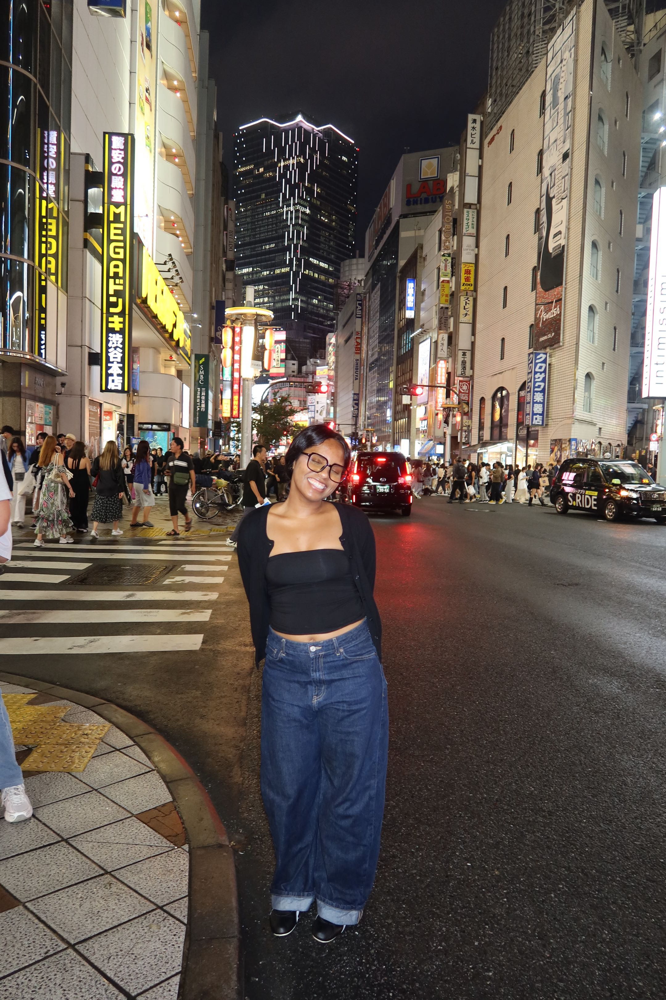
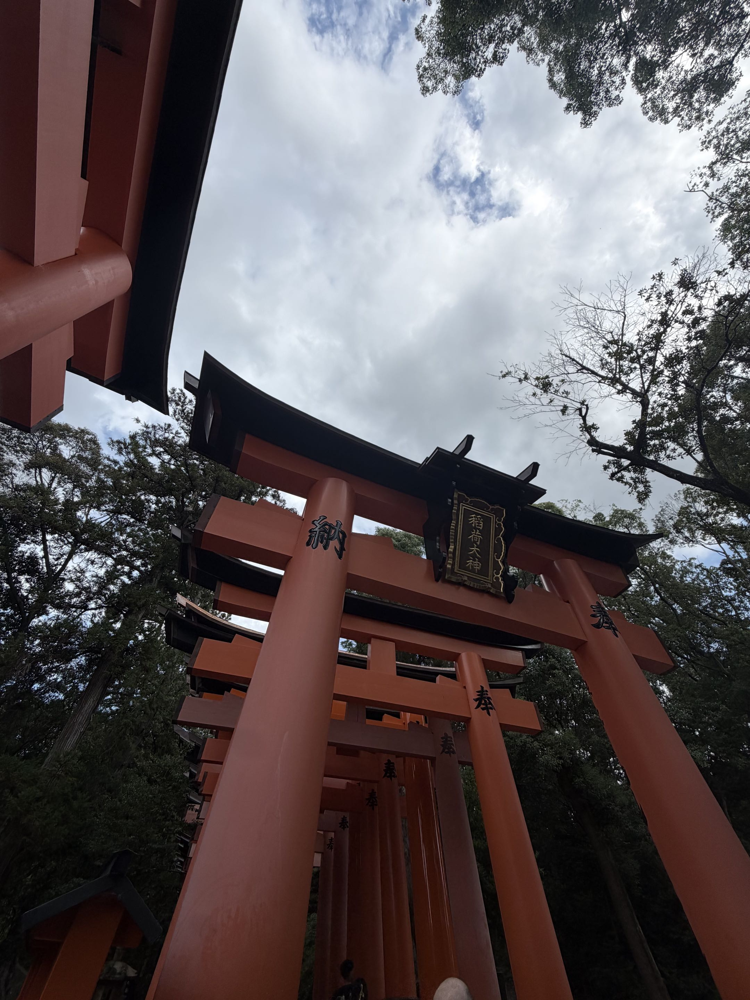
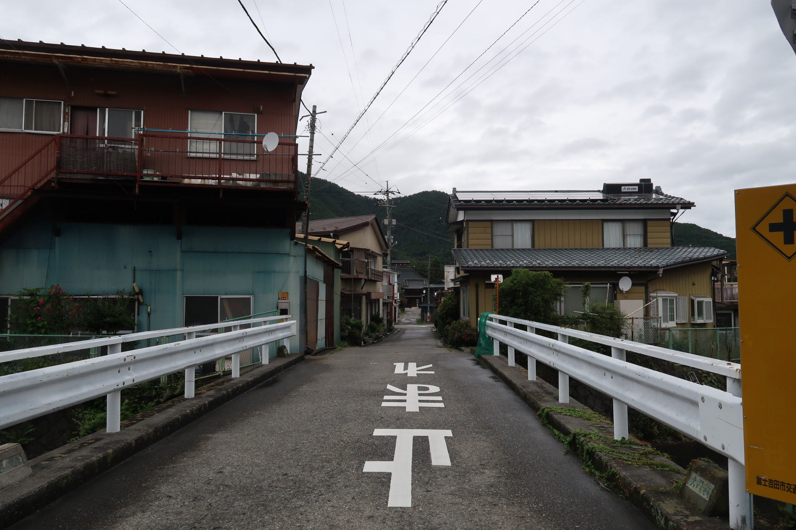

MY JAPAN DIARY
Little moments.
Memories worth keeping.
THREE LITTLE CHAPTERS
Postcards from Japan

Dear Tokyo
City scenes, little discoveries, and a camera roll full of memories. Here is a glimpse into the Tokyo chapter of my diary.
Explore Tokyo →
Moments in Kyoto
A collection of views and details from Kyoto. These photographs keep little pieces of the journey in one place.
Explore Kyoto →
From Fujiyoshida
Another stop, another chapter. Browse the photographs and small moments collected during my time in Fujiyoshida.
Explore Fujiyoshida →A PERSONAL TRAVEL JOURNAL
Japan, through my eyes
Welcome to Japan Diary, a little space for collecting memories from my trip to Japan. This journal brings together photos, food, and travel notes that I want to remember.
More than a destination
Sometimes the smallest details become the memories we keep. This diary is a place for those details, from a quiet view to something delicious discovered along the way.
A few notes for your own journey
Alongside my memories, I am collecting practical reminders for planning a trip. Visit Travel Notes for a checklist and a practice trip planning form.